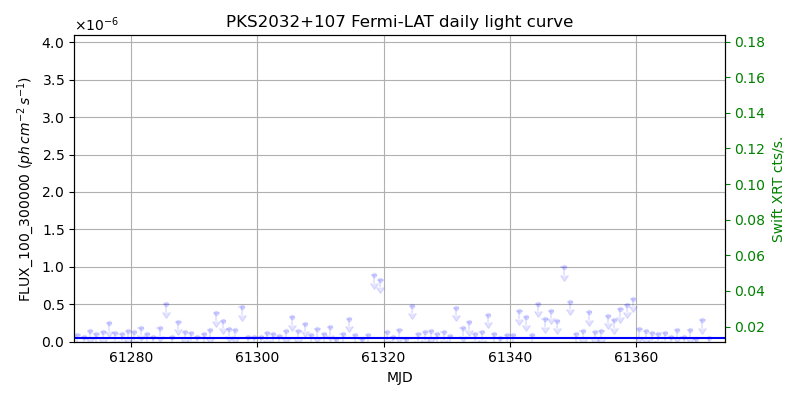
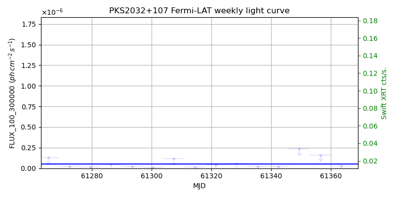
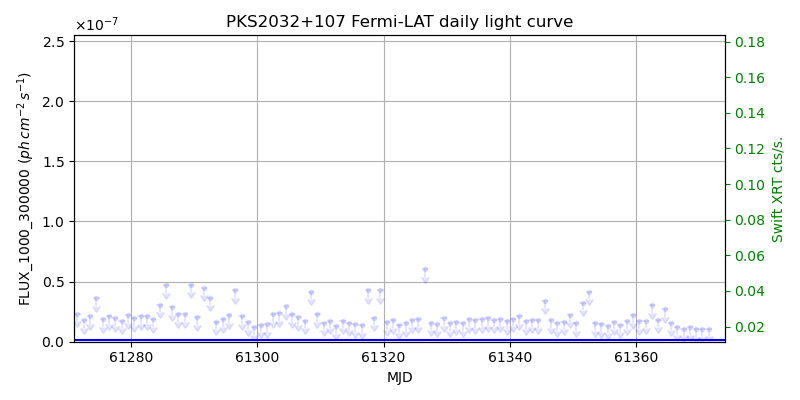

LAT Lightcurve site: https://fermi.gsfc.nasa.gov/ssc/data/access/lat/msl_lc/source/PKS_2032p107
Swift site: https://www.swift.psu.edu/monitoring/source.php?source=PKS2032+107
NED: Query
Time of last update of this page: UT: 2026-11-20 16:28 (MJD: 61364.686)
| Property | Value |
|---|---|
| R.A. | 20:35:22.32 |
| Dec. | 10:56:06.0 |
| z | 0.601 |
| 3FGL SpectrumType | PowerLaw |
| 3FGL PL Index | 2.47 |
| 3FGL Flux_100_300000 | 5.18e-08 1 / (s cm2) |
| 3FGL Flux_1000_300000 | 1.76e-09 1 / (s cm2) |
| 3FGL Flux >200 GeV | 7.38e-13 1 / (s cm2) |
| 3FGL Extrap. Crab >200 GeV | 0.00 |
| 3FGL Flux After EBL Absorption >200GeV | 7.49e-14 1 / (s cm2) |
| 3FGL EBL Crab Fraction >200GeV | 0.00 |

| MJD | dMJD | Flux | dFlux | Frac3FGL | FracCrab>200GeV | EBLFracCrab>200GeV |
|---|---|---|---|---|---|---|
| 61359.50 | 0.50 | 5.73e-07 | 0.00e+00 | 0.00 | 0.00 | 0.00 |
| 61360.50 | 0.50 | 1.67e-07 | 0.00e+00 | 0.00 | 0.00 | 0.00 |
| 61361.50 | 0.50 | 1.44e-07 | 0.00e+00 | 0.00 | 0.00 | 0.00 |
| 61362.50 | 0.50 | 1.15e-07 | 0.00e+00 | 0.00 | 0.00 | 0.00 |
| 61363.50 | 0.50 | 1.08e-07 | 0.00e+00 | 0.00 | 0.00 | 0.00 |

| MJD | dMJD | Flux | dFlux | Frac3FGL | FracCrab>200GeV | EBLFracCrab>200GeV |
|---|---|---|---|---|---|---|
| 61328.50 | 3.50 | 5.57e-08 | 0.00e+00 | 0.00 | 0.00 | 0.00 |
| 61335.50 | 3.50 | 2.12e-08 | 0.00e+00 | 0.00 | 0.00 | 0.00 |
| 61342.50 | 3.50 | 2.17e-08 | 0.00e+00 | 0.00 | 0.00 | 0.00 |
| 61349.50 | 3.50 | 2.35e-07 | 0.00e+00 | 0.00 | 0.00 | 0.00 |
| 61356.50 | 3.50 | 1.62e-07 | 0.00e+00 | 0.00 | 0.00 | 0.00 |

| MJD | dMJD | Flux | dFlux | Frac3FGL | FracCrab>200GeV | EBLFracCrab>200GeV |
|---|---|---|---|---|---|---|
| 61359.50 | 0.50 | 2.20e-08 | 0.00e+00 | 0.00 | 0.00 | 0.00 |
| 61360.50 | 0.50 | 1.72e-08 | 0.00e+00 | 0.00 | 0.00 | 0.00 |
| 61361.50 | 0.50 | 1.76e-08 | 0.00e+00 | 0.00 | 0.00 | 0.00 |
| 61362.50 | 0.50 | 3.06e-08 | 0.00e+00 | 0.00 | 0.00 | 0.00 |
| 61363.50 | 0.50 | 1.84e-08 | 0.00e+00 | 0.00 | 0.00 | 0.00 |
| MJD | dMJD | Flux | dFlux | Frac3FGL | FracCrab>200GeV | EBLFracCrab>200GeV |
|---|---|---|---|---|---|---|
| 61328.50 | 3.50 | 6.68e-09 | 0.00e+00 | 0.00 | 0.00 | 0.00 |
| 61335.50 | 3.50 | 2.56e-09 | 0.00e+00 | 0.00 | 0.00 | 0.00 |
| 61342.50 | 3.50 | 2.75e-09 | 0.00e+00 | 0.00 | 0.00 | 0.00 |
| 61349.50 | 3.50 | 2.63e-09 | 0.00e+00 | 0.00 | 0.00 | 0.00 |
| 61356.50 | 3.50 | 2.84e-09 | 0.00e+00 | 0.00 | 0.00 | 0.00 |
--------------------------------------------------------- Using user-supplied coords: 20:35:22.32 10:56:06.0 2000 --------------------------------------------------------- FLWO UT night of: 2026-11-21 Local Sid. @ Midnight: 03:37 Sunset (-15.0) (local, UT): 18:33 01:33 Sunrise (-15.0) (local, UT): 05:47 12:47 Moonrise (local, UT): Moonset (local, UT): 03:40 10:40 Moon phase: 0.85 --------------------------------------------------------- AzTime LSID UT Obj_el Obj_az Mn_el Mn_az Sep. --------------------------------------------------------- 18:33 22:09 01:33 60.3 231.1 47.9 117.4 59.3 19:03 22:39 02:03 55.0 240.7 53.3 125.0 59.4 19:33 23:09 02:33 49.2 248.2 58.2 134.7 59.6 20:03 23:39 03:03 43.2 254.3 62.3 146.9 59.7 20:33 00:09 03:33 37.0 259.5 65.1 162.1 59.8 21:03 00:39 04:03 30.6 264.0 66.3 179.7 60.0 21:33 01:09 04:33 24.3 268.2 65.4 197.5 60.1 22:03 01:39 05:03 17.9 272.2 62.9 213.2 60.2 22:33 02:09 05:33 11.5 276.0 59.0 225.9 60.4 23:03 02:39 06:03 5.3 279.8 54.2 235.9 60.5 23:33 03:09 06:33 -0.5 283.7 48.9 243.9 60.7 00:03 03:39 07:03 -7.3 287.8 43.2 250.4 60.8 00:33 04:10 07:33 -13.3 292.2 37.3 255.9 61.0 01:03 04:40 08:03 -19.2 296.9 31.2 260.7 61.2 01:33 05:10 08:33 -24.7 302.1 25.1 265.1 61.4 02:03 05:40 09:03 -30.0 308.0 19.0 269.2 61.6 02:33 06:10 09:33 -34.8 314.6 12.9 273.0 61.8 03:03 06:40 10:03 -39.0 322.2 6.8 276.9 62.0 03:33 07:10 10:33 -42.6 330.7 1.0 280.7 62.3 04:03 07:40 11:03 -45.2 340.3 -4.9 284.7 62.5 04:33 08:10 11:33 -46.8 350.7 -11.1 288.8 62.8 05:03 08:40 12:03 -47.3 1.5 -16.8 293.2 63.1 05:33 09:10 12:33 -46.5 12.3 -22.3 298.1 63.4 05:47 09:25 12:47 -45.7 17.2 -24.8 300.5 63.5 --------------------------------------------------------- Dark hours >55 deg.: 0.00